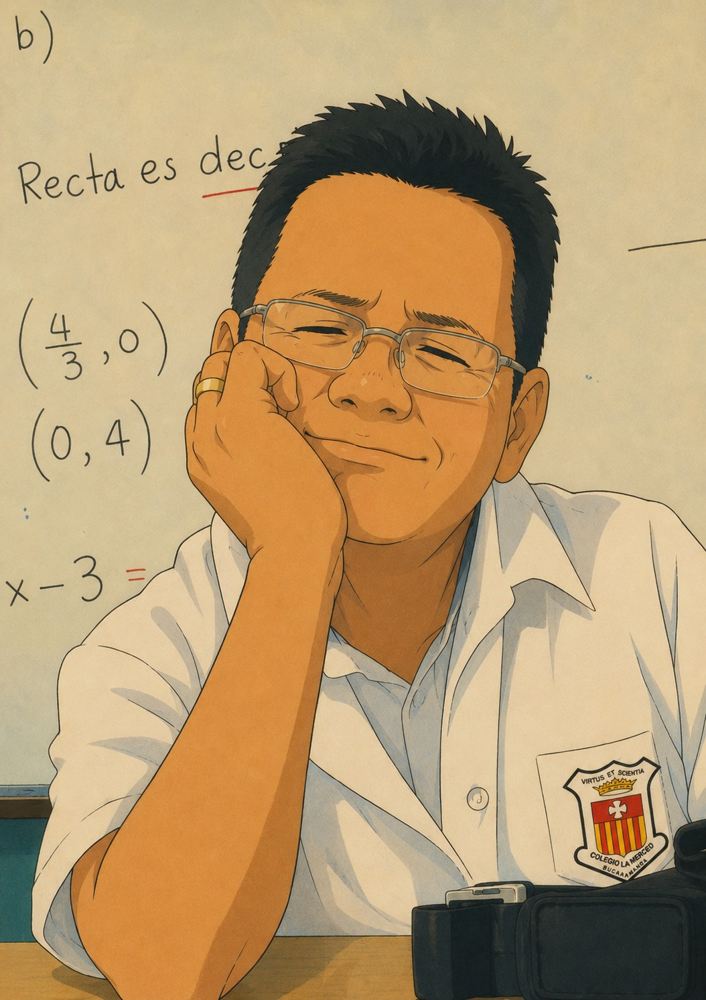
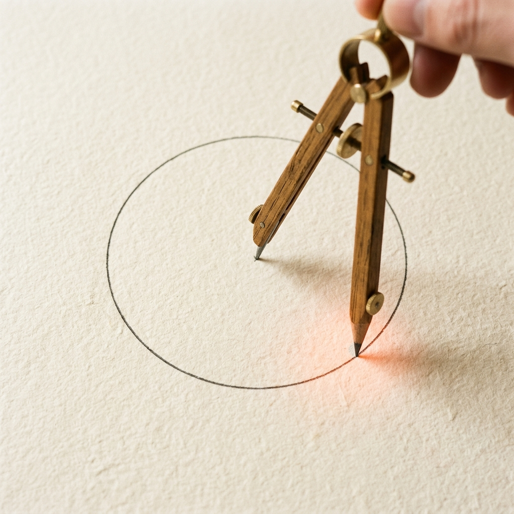
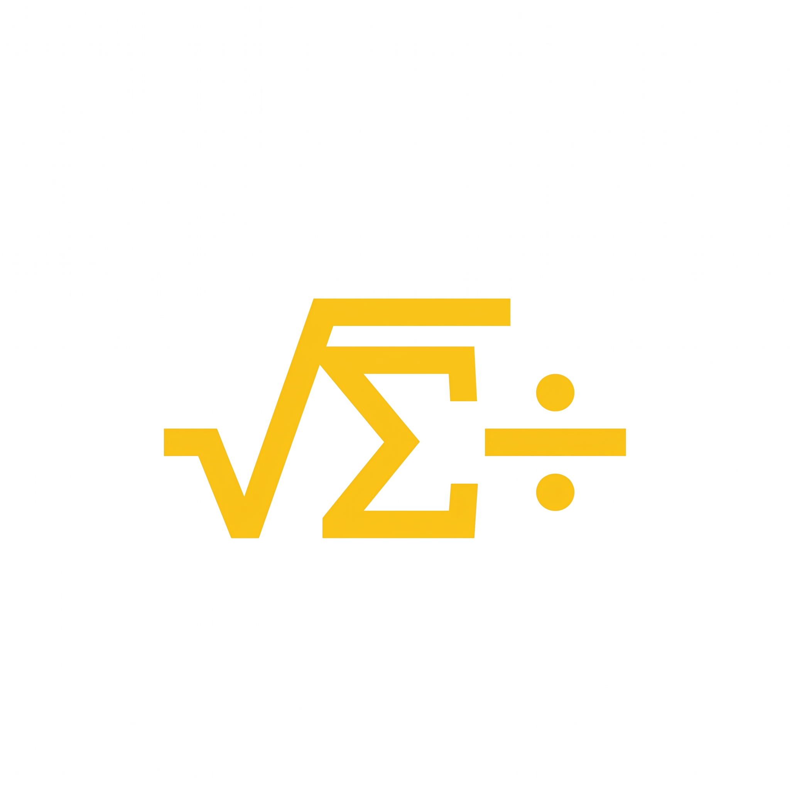

Matemático de profesión y empresario por vocación. Transformo la abstracción matemática en soluciones estratégicas de alto impacto para el mundo de los negocios.


El aula como punto de partida para transformar el pensamiento lógico
Mi camino comenzó en las aulas. Ser docente de Matemáticas no fue solo enseñar fórmulas o teoremas; fue descubrir el poder de estructurar el pensamiento y encender la curiosidad en mis estudiantes. Esa experiencia directa me enseñó que la educación es la herramienta de transformación más poderosa. Entender el aula desde adentro, con sus retos y su magia, fue la verdadera inspiración y el valor fundamental que me impulsó a dar el salto: de la pizarra a fundar soluciones que multiplican ese impacto a gran escala.
Mi propósito es unir la precisión científica con la audacia empresarial. No se trata solo de recopilar datos, sino de estructurar la lógica para guiar el crecimiento.
Desarrollando modelos cuantitativos para negocios complejos.
Fundadas, escaladas y asesoradas en eficiencia operativa.

"El éxito en los negocios es el resultado de un algoritmo optimizado por la intuición humana."